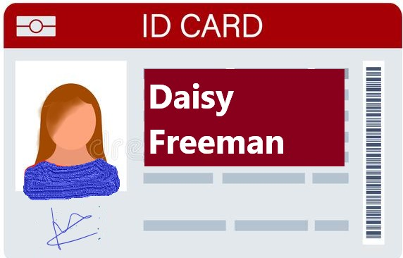
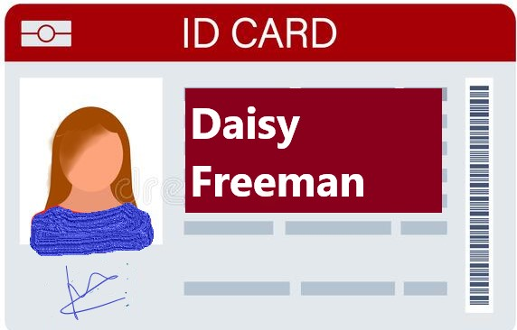

A new case emerge, a young women in her late 20s, Maylene Ross, never return home after work last night, instead she sent a suspicious text to her sister. Although, the text appeared to be normal, according to her sister there was a code hidden in it indicating that she was kidnapped. You are the detective and it is now your task to solve mystery behind her disappearance.
Maylene's phone was last located in this place before it was turned off. Find any hidden evidence left by her or the culprit that could provide for her disappearance.
The evidence doesn't indicate the victim was kidnapped that time.
(don't forget to add AM/PM)
The watch shows the time 10:20 , it must have been broken during the kidnapping
The shoe-print found on the kidnapping site. It looks like a man's shoe, possibly belonged to the culprit.
The handkerchief found on the crime scene has "R.S" written on it. Could it be some kind of clue left behind by the victim.
Inside the bag there was various receipt, the last time she bought something was at 9:45PM, she must have gone missing afterwards.
 
The evidence also gave a clue about the culprit. From the earlier conversation the detective narrowed down the suspect. Who it might me?
Not quite. There are no evidence that shows this person is the culprit.
The shoe-print found on the kidnapping site. It looks like a man's shoe, possibly belonged to the culprit.
The handkerchief found on the crime scene has "R.S" written on it. Could it be some kind of clue left behind by the victim.
Inside the bag there was various receipt, the last time she bought something was at 9:45PM, she must have gone missing afterwards.
The watch shows the time 10:20 , it must have been broken during the kidnapping
After the room was unlocked the victim Maylene was rescued unharmed. The police chased after the suspect Richard Spellman and caught him at the airport as he was trying to flee the country. Maylene revealed that Richard was trying to sell classified information of the company they worked in to a rival foreign company and when she found out about it, she threatened Richard that she was going to report him.So, to hide his misdeeds he kidnapped Maylene. With all the evidence he had to choice but to confess to the police that he is the culprit behind the kidnapping and later he was sentenced to 30 years in prison, the top secret information was also retrieved successfully before it passed the borders.